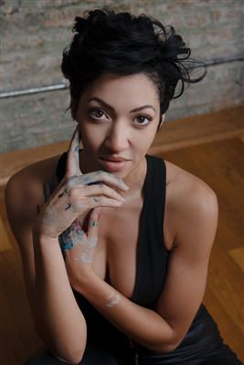
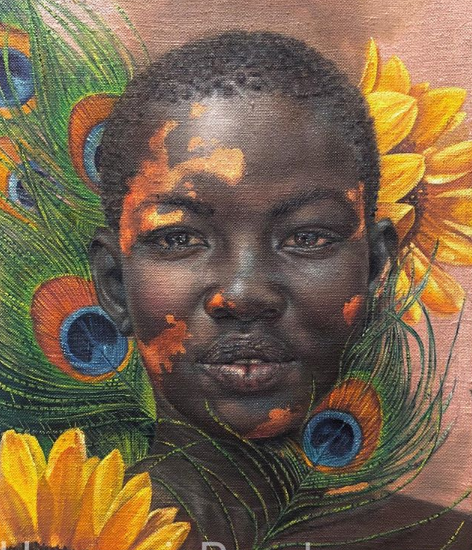

Harmonia Rosales (Chicago, 1984) é uma artista norte-americana de ascendência afro-cubana.
Sua obra reinterpreta pinturas clássicas da Renascença, substituindo as figuras brancas por pessoas negras
Rosales nasceu em Chicago e cresceu em Champaign. Foi incentivada por seus pais a se interessar por artes visuais. Frequentou a Glenville State College na Virgínia Ocidental.
Ao crescer, gostava de muitas das pinturas clássicas da Renascença italiana. Sua família era muito tradicional e dizia-lhe de que precisaria um homem que a sustentasse. Quando cresceu, se casou com seu namorado da escola com quem teve uma filha. Após dar-se conta de que a relação não daria certo, se divorciou e ficou praticamente sem nenhuma posse material em seu poder.
Rosales trabalha reinterpretando obras-primas renascentistas, substituindo os temas principais dos quadros por heroínas negras.
Rosales assinala que com sua obra espera ser capaz de empoderar pessoas com a arte, mesmo que seja um pequeno grupo de pessoas e dar às mulheres negras "obras de arte que reflitam sua beleza que tem sido ignorada durante tanto tempo".
Uma de suas muitas obras é O nascimento de Oxum, um óleo sobre tela que reimagina a obra de Sandro Botticelli, O nascimento de Vênus, colocando Oxum, a orixá iorubá da fertilidade, sensualidade e prosperidade, numa concha do mar rodeada de anjos negros, em contraste com a pintura de Botticelli, onde uma Vênus branca, a deusa do amor, beleza e fertilidade, está numa concha de mar rodeada de anjos brancos. Nesta pintura, Oxum tem vitiligo, representado por camadas de ouro. Sobre esta pintura, Rosales diz “Tradicionalmente vemos Vênus como essa linda mulher de cabelos esvoaçantes. Meu cabelo nunca esvoaçou, então eu me pergunto por que essa deveria ser uma pintura da mulher mais bonita do mundo? Então eu a mudei e a fiz ter vitiligo porque as imperfeições são lindas". Também diz que criou este trabalho pensando em sua filha para lhe mostrar que as mulheres negras e seu cabelo natural são formosos.
Outra das obras de Rosales foi A criação de Deus, uma obra de arte de 2017, na qual ela recria a Criação de Adão de Michelangelo,
